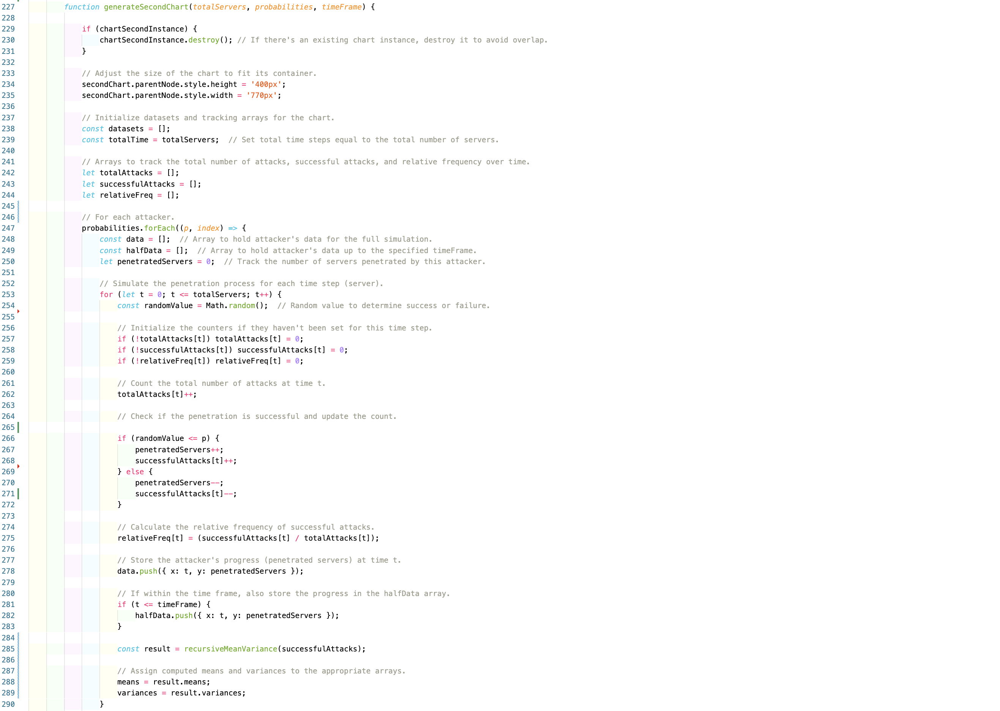
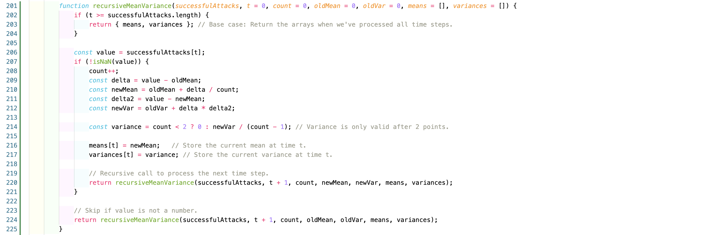
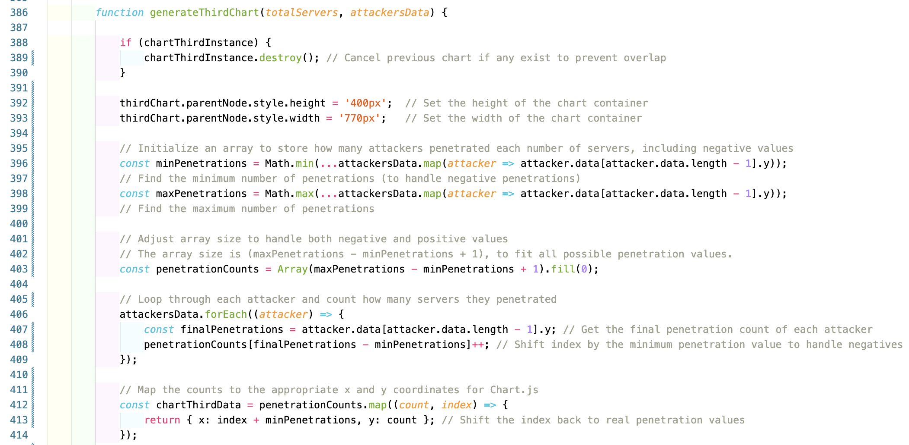
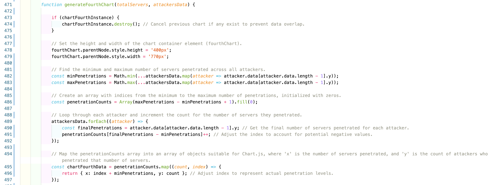

Welford's algorithm is used for computing the running variance and mean with a focus on its numerical properties.
The formula for updating the mean is given by:
\[ m_t = m_{t-1} + \frac{x_t - m_{t-1}}{t} \]
where \(m_{t-1}\) is the mean calculated from the previous \(t-1\) data points, when a new data point, \(x_t\), arrives at time \(t\).
The formula for updating the variance is:
\[ s_t^2 = s_{t-1}^2 + (x_t - m_{t-1})(x_t - m_t) \]
where \(s_{t-1}^2\) is the variance from the previous data points.
The unbiased sample variance is:
\[ \hat{\sigma}^2 = \frac{s_t^2}{t-1} \]
The absolute frequency describes the number of times a particular value has been observed.
The relative frequency describes the number of times a particular value has been observed in relation to the total number of values (usually as a %).
What follows is built upon Homework #1 results, with the addition of the absolute and relative frequencies. Moreover, a random walk has been implemented, this results in (sometimes) negative results as seen below in the chart. As seen in the aforementioned Homework a distribution of the result will be presented and if desired one can input a specific time frame to check on the distribution on that particular interval.

The chart initialization and reset process ensures that each time a new chart is generated, any previous instance of the chart is removed, avoiding visual and data overlap. The function starts by checking if there is an existing chartSecondInstance and destroys it if present. After clearing the old chart, the function adjusts the chart's dimensions to fit within a predefined container, ensuring the visualization appears correctly. This preparation step is critical for rendering the chart cleanly and preventing conflicts with the new data that will be added.
The data simulation section focuses on simulating the penetration process for each attacker over a defined number of servers (or time steps). This is done through random trials where a random value is generated for each time step to determine if a penetration is successful. An additional random walk mechanism is introduced, where the number of successful attacks fluctuates by increasing or decreasing the number of penetrated servers based on another random value. During this process, Welford's algorithm is employed to compute the running mean and variance of successful attacks. This ensures that the function calculates the mean and variance dynamically as the attacks are simulated over time.
The final section deals with dataset creation and chart configuration. It pushes individual datasets for each attacker, as well as additional datasets for relative frequency, absolute successful attacks, the running mean, and variance. The datasets array holds this information, which is then used to construct the chart. The configuration includes axes settings, line colors, and a legend that filters specific datasets to display. The chart is rendered using Chart.js with specific configuration options to ensure that the time steps (x-axis) and the number of servers penetrated (y-axis) are clearly displayed, allowing users to visually analyze the simulation results.
The given code handles the creation of a chart that visualizes how many attackers penetrated a certain number of servers. It starts by checking if there is an existing chartThirdInstance to avoid overlap. If such a chart exists, it is destroyed to ensure a clean canvas for the new chart. The height and width of the parent container (thirdChart.parentNode) are then explicitly set to ensure that the chart fits within a specific size on the page, providing a consistent visual appearance.
Next, the code focuses on determining the range of penetrations, including handling cases where attackers might have penetrated a negative number of servers due to some process like a random walk. The minPenetrations and maxPenetrations variables are computed by scanning the final penetration values of all attackers using the Math.min() and Math.max() functions. This ensures that both negative and positive penetration values are accounted for in the subsequent analysis.
The same holds true in the code above where the core of the data visualization is handled through the penetrationCounts array. This array's size is dynamically determined to accommodate all possible penetration values (from the minimum to the maximum). Each element of this array is initialized to zero and represents how many attackers achieved a specific number of penetrations. The forEach loop then iterates over the attackers' data, extracting their final penetration count. These counts are mapped into the penetrationCounts array, with an offset based on the minimum penetration value to properly handle negative values.
Finally, the penetrationCounts array is transformed into a format suitable for Chart.js by creating chartFourthData. This step maps the penetration count to an x-y format where the x-coordinate represents the number of servers penetrated (both negative and positive), and the y-coordinate indicates how many attackers achieved that penetration count. The data is then ready to be used for visual representation in the chart.